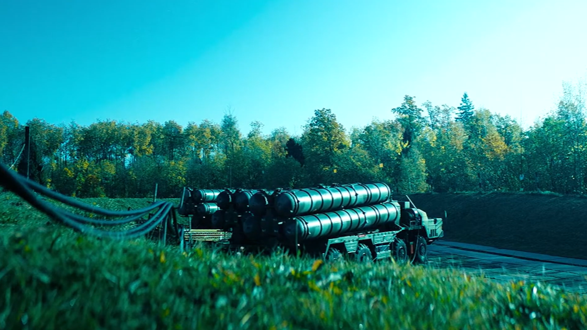
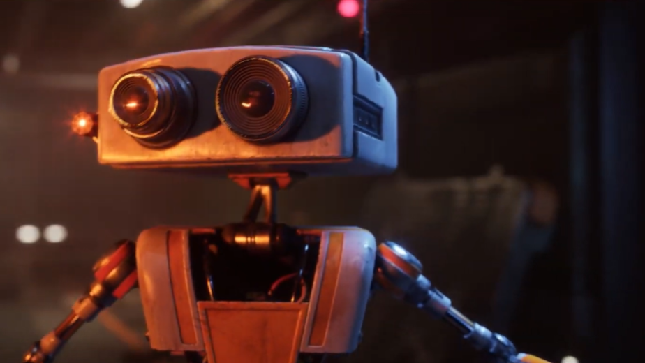
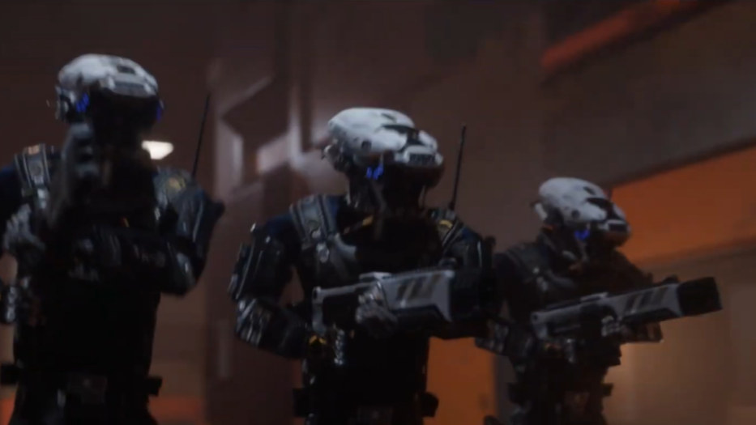
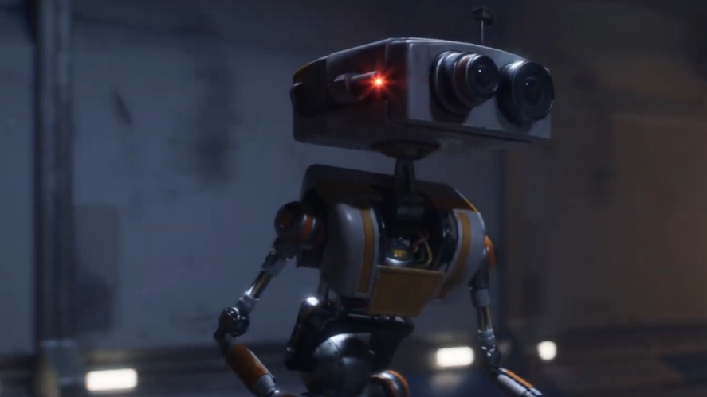
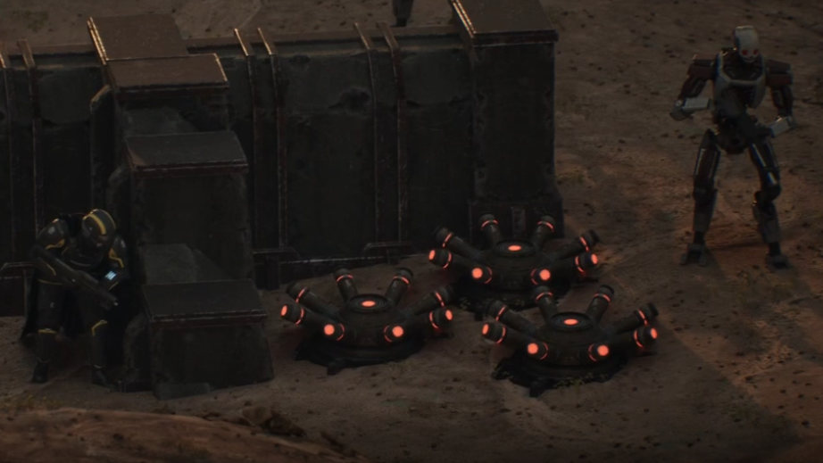
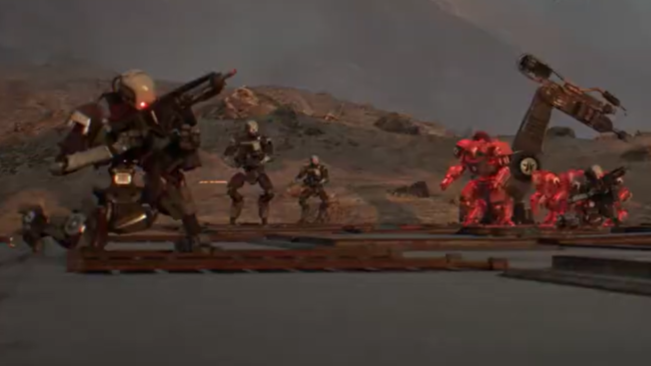
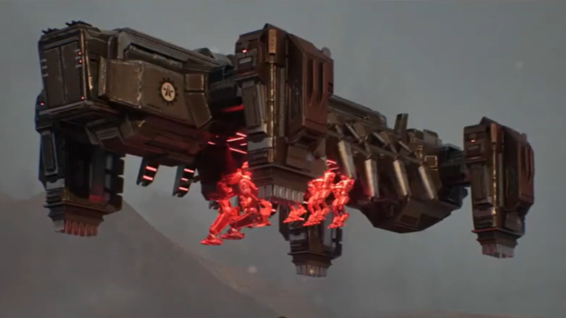

Product Visualisation
Digital product imagery and presentation visuals for concepts, campaigns and commercial communication.
CGI / COMPUTER-GENERATED IMAGERY
Computer-generated imagery for product visuals, digital environments and cinematic storytelling — shaped around each project's creative brief and production requirements.
Computer-generated imagery (CGI) creates visual content through digital modelling, materials, lighting, rendering and compositing workflows.
At AUTOTUBE CREW STUDIO, CGI can support product and concept visuals, digital sets, environments and cinematic imagery for film, gaming, advertising and other screen-based projects.
Each production is planned around the approved brief, visual direction, technical specifications and intended delivery format.
CGI workflows can be tailored to the look, complexity and production needs of each project.
Digital product imagery and presentation visuals for concepts, campaigns and commercial communication.
Created locations, sets and environments for cinematic scenes, visual storytelling and digital experiences.
Materials, lighting, composition and rendering approaches developed to achieve an agreed visual direction.
Computer-generated imagery planned for integration into film, animation, advertising and other screen-based work.
A selection of CGI portfolio visuals supplied for the studio website. Project-specific credits and descriptions can be added when approved information is available.







Production stages are adapted to the approved project scope, visual direction and delivery needs.
Understand the objective, references, format and technical requirements.
Build the required digital elements, scene structure and visual approach.
Refine materials, lighting, composition and rendering for the planned result.
Review the agreed outputs and prepare final assets in the required formats.
HAVE A CGI PROJECT?
Share your concept, references or production requirements with the studio to start a conversation.
Discuss your project